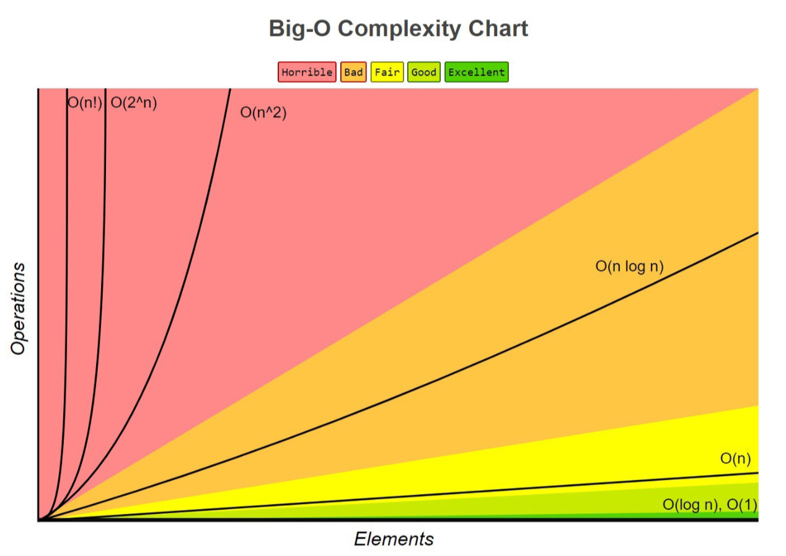

Cyril de Wit, 6 februari 2020
Bij algoritme analyse zijn we geïnteresseerd in de karakteristieken van een algoritme. De bevindingen uit een analyse stellen ons in staat om de geschiktheid van een algoritme voor verschillende toepassingen te evalueren of te vergelijken met andere algoritmen voor dezelfde toepassing. Algoritme verschillen vaak nogal van elkaar, terwijl het doel van deze algoritmen hetzelfde is.
Algoritmen die op een computer worden uitgevoerd zijn in feite computaties. Een computatie is het proces van het berekenen van iets met behulp van wiskundige of logische methoden. Computaties maken gebruik van hulpbronnen van de computer. De meest fundamentele systeemhulpbronnen zijn een processor en het geheugen. Aangezien algoritmen verschillen van ontwerp verschillen deze behoeftes ook per algoritme. We zijn daarom in de informatica geïnteresseerd in deze zogenoemde kosten.
In principe kunnen we het gebruik van deze hulpbronnen goed meten door de tijdsduur op te nemen, maar omdat computers tamelijk van elkaar verschillen en er soms meerdere dingen tegelijk worden uitgevoerd zijn deze metingen niet praktisch voor vergelijkingen. Om deze reden is de complexiteitsgraad in het leven geroepen. De hoeveelheid middelen die nodig zijn voor het uitvoeren van een bepaald algoritme is de complexiteitsgraad. Over het algemeen hebben we het over de tijdscomplexiteit en de ruimtecomplexiteit. Waarvan de tijdscomplexiteit het meest wordt geanalyseerd. Doordat de invoer van een algoritme verschilt, zijn we vooral geïnteresseerd naar algemene schaalbaarheid van een algoritme. Hoe schalen deze hulpbronbehoeften naarmate de hoeveelheid invoergegevens stijgen.
De complexiteitsgraad kunnen we opdelen in twee gevallen:
Voor het beschrijven van de complexiteitsgraad in het slechtste geval maken we gebruik van de grote-O-notatie. Om de grote-O-functie van een normale functie te krijgen laten we alleen de grootste term staan en halen we de constante factoren weg.
We hebben bijvoorbeeld een functie f(n) = 4n3 + 2n2 + 3n + 1
De grootste term in deze functie is 4n3 en als we vervolgens ook de constante 4 weglaten houden we de grote-O-functie over: O(n) = n3.
De reden waarom deze notatie interessant is, is omdat we functies hierdoor kunnen classificeren op hoe snel wiskundige functies groeien naarmate hun invoer groter wordt.
De volgende functies zien er bijvoorbeeld erg verschillend uit, maar groeien met ongeveer dezelfde snelheid.
Voor het vinden van de grote-O-functie van een algoritme moeten er een aantal stappen worden doorlopen.
Basisbewerkingen zijn bijvoorbeeld rekenkundige bewerkingen als delen (/), vermenigvuldigen (*), vergelijkingsoperaties (==, !=, <,>), toewijzingsoperaties (=) en statements als return.
Hieronder is een grafiek gegeven met de meest voorkomende grote-O-functies met daarbij een tabel.
| Notatie | Type | Omschrijving |
|---|---|---|
| O(1) | Constant | Blijft constant, ongeacht de grootte van de gegevensset. |
| O(log n) | Logaritmisch | Verhoogt met een constante. Als n verdubbelt, neemt de uitvoeringstijd toe met een constante, kleiner dan n. |
| O(<n) | Sublinear | Presteert minder dan lineair en beter dan logaritmische tijd. |
| O(n) | Linear | Verhoogt in verhouding tot n. Als n verdubbelt, verdubbelt ook de tijd om uit te voeren. |
| O(n log n) | n log n | Verhoogt met een veelvoud van een constante. |
| O(n2) | Kwadratisch | Verhoogt evenredig met het product van n*n. |
| O(cn) | Exponentieel | Verhoogt op basis van de exponent n van een constante c. |
| O(n!) | Factorial | Verhoogt evenredig met het product van alle opgenomen nummers (bijv. 1 * 2 * 3 * 4 * 5 ...). |
Het slechtste-geval wordt genoteerd met de grote O, maar voor het noteren van het beste-geval maken we gebruik van de grote-omega notatie: Ω(f(n)).